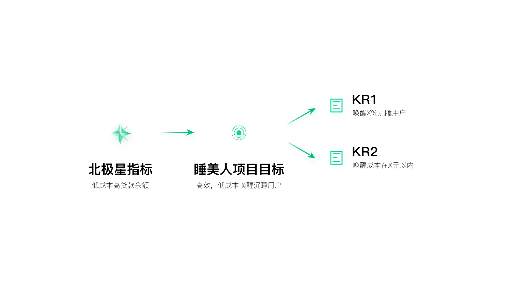
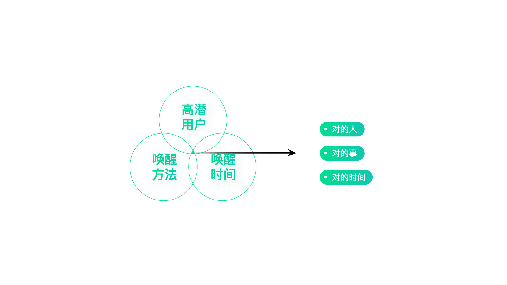
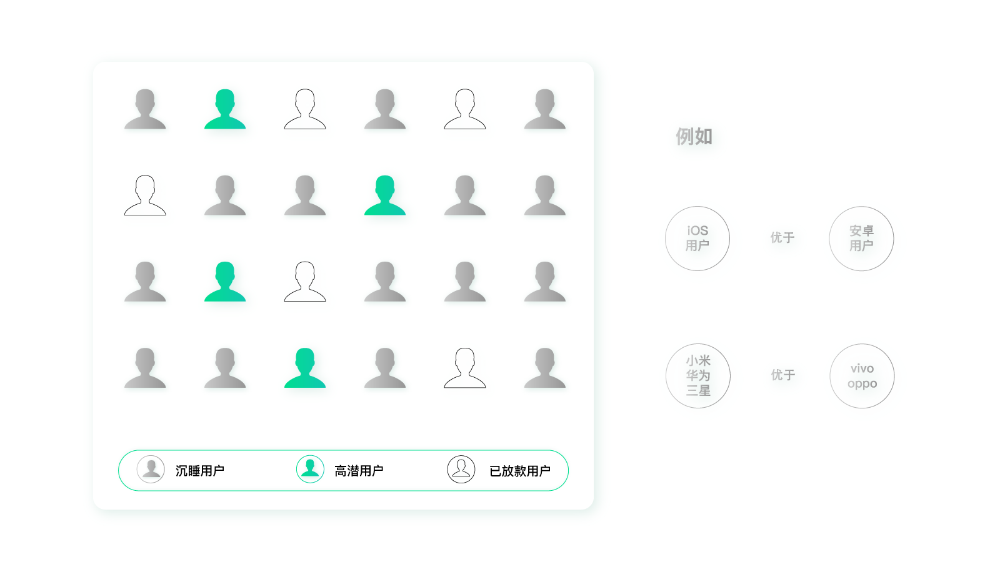
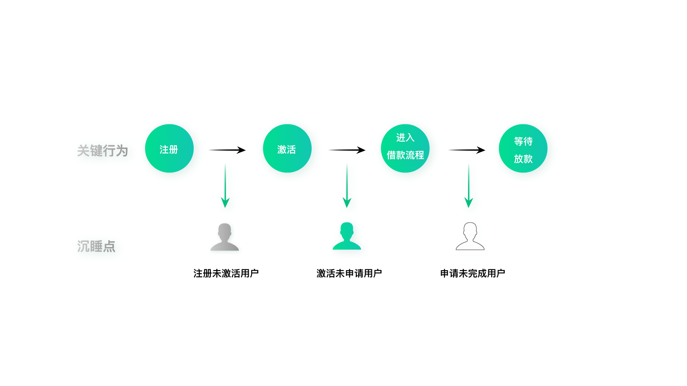
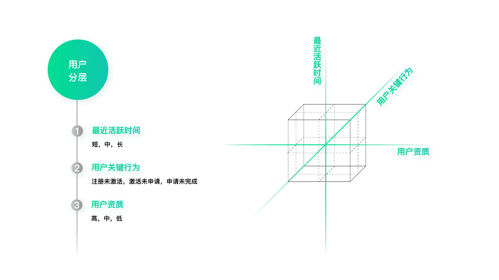
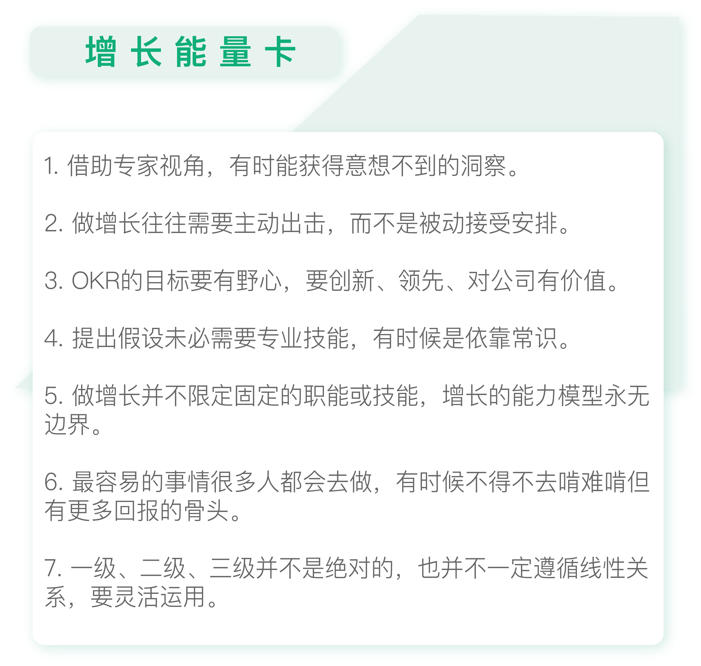

- 00 开篇词 人人都是增长官.md
- 01 预习 增长小白如何“弯道超车”？.md
- 02 预习 如何理解“增长”？.md
- 03 预习 不同职能如何做好增长？.md
- 04 预习 做增长如何处理职能间的矛盾？.md
- 05 正确目标找不对，天天加班也枉然.md
- 06 活学活用北极星指标.md
- 07 OKR如何助力增长？.md
- 08 不懂用户调研？那就对了！.md
- 09 调研目标：在差异性洞察中找到爆破点.md
- 10 数据分析：在“花式对比”中发现玄机.md
- 11 用户分类：围绕北极星指标细分人群.md
- 12 用户访谈：像侦探一样寻找破案线索（上）.md
- 13 用户访谈：像侦探一样寻找破案线索（下）.md
- 14 提炼用户差异，发现增长契机.md
- 15 挖掘产品优势，打破增长瓶颈.md
- 16 定位营销差异，抢占用户心智.md
- 17 一级方向：找到增长爆破点.md
- 18 B端产品如何调研？.md
- 19 全局规划增长机会.md
- 20 统筹全局的用户增长地图.md
- 21 案例解析：定义关键增长指标.md
- 22 正负双向洞察，找准切入点.md
- 23 二级机会：制定增长策略.md
- 24 为一家濒临破产的公司制定增长策略（上）.md
- 25 为一家濒临破产的公司制定增长策略（中）.md
- 26 为一家濒临破产的公司制定增长策略（下）.md
- 27 为什么指标数据怎么优化都不提升？.md
- 28 案例解析：打造增长闭环（上）.md
- 29 案例解析：打造增长闭环（下）.md
- 30 案例解析：唤醒沉睡用户（上）.md
- 31 案例解析：唤醒沉睡用户（下）.md
- 32 没有分解，就无缘增长.md
- 33 四个要点颠覆传统需求文档.md
- 34 三级落地：无限场景应用.md
- 35 手把手教你设计一次成功的实验（上）.md
- 36 手把手教你设计一次成功的实验（下）.md
- 37 积少可成多，别针换别墅.md
- 38 四级延续：增长组件库案例.md
- 39 以用户为中心增长.md
- 增长导航图 增长专栏的知识架构是怎样的？.md
- 尾声 结束意味着新的开始.md
- 预习答疑 你需要一张思维导图吗？.md
30 案例解析：唤醒沉睡用户（上）
你好，我是刘津。
前面我介绍了几个简单的使用精益闭环的例子，今天我来为你介绍一个比较复杂的例子：唤醒沉睡用户。
为什么我们要做唤醒沉睡用户这件事情呢？
还记得我说的负向二级洞察吗？前面三个例子是由正向二级洞察得到的机会，而唤醒沉睡用户是从负向二级洞察中得到的。如果你印象不深了，可以再回顾一下第22讲和第23讲的相关内容。

当时宜人贷已经有了亿级的注册用户，再想新增用户自然就很难了，毕竟中国的人口是有限的，其中有借款需求的人就更少了。况且大家都知道，最近几年获客成本越来越高，所以我们再继续付费做精准营销已经不是最合适的方式了。
那么在这种情况下，要如何进一步做增长呢？
我们找了不同职能的同事去了解增长机会点，最终从一位数据科学家口中得知（专家视角），在这上亿的注册用户里，真正在我们这里借款的只占很少一部分，大部分用户注册后并没有产生后续行为，成为了我们的沉睡用户。如果我们能适当唤醒这部分用户，哪怕只是很小的一部分，都可以用更小的成本带来更多的实际借款用户。
这个发现让我们感到十分振奋。但是可惜的是，公司当时并没有足够的资源深入地做这件事情，也尚未有人发起申请，所以我们决定主动找运营的同学合作，尝试用研究分析加实践的方式，唤醒沉睡用户。
由于之前我们并没有运营经验，也没有做过类似的事情，所以刚开始也不知道该从何入手。运营的同学之前采用的方式比较简单，就是在特定时间内群发短信，并且没有再后续跟进。我们希望能找到更好的方式。
这时候我想到，能不能用精益闭环的思路试试呢，说不定会有新的启发。于是，我们开始了这次探索。
围绕北极星指标明确项目OKR
为此我们专门立了个项目——“睡美人项目”。首先，我们要做的是给这个项目明确目标。
需要注意的是，由于“唤醒沉睡用户”涉及到多个用户旅程节点，所以无法直接从用户增长地图上找到对应指标。但是，我们可以参考北极星指标给出适合项目的目标。
比如，当时的北极星指标是低成本高贷款余额，那么对应“唤醒沉睡用户”这个项目，项目目标自然就是“低成本、高效地唤醒沉睡用户”了。

OKR的O有了，接下来要分解KR。很明显，这里可以分出两个KR，分别是：
- KR1，唤醒×%沉睡用户；
- KR2，唤醒成本在×元以内。
这里的具体数值是通过和运营同学深入探讨得到的。他们会通过经验告诉我们，什么样的数字会让他们感觉效果一般，什么样的数字会让他们感觉惊喜。我们一般会选择让他们感到惊喜的数字作为目标。
关于OKR制度，当时的老板曾经提出过非常明确的要求：一是要足够创新；二是要行业领先；三是对公司有价值。这些要求令我受益匪浅。所以我们定目标，一定不会定容易实现的目标，而是要尽量定有挑战性的。
通过常识找到假设的思路
指标定下来，接着就要提出假设了。你可能会以为，要想提出正确的假设，一定要有非常扎实的运营基础、有专业的知识和技能才能提的出来。而实际上未必如此，有的时候依据常识就可以提出假设。这正是增长的魅力，它亦正亦邪，既可以遵循逻辑，也可以不按牌理出牌。只要能提升价值，可以无所不用其极。
就这个案例来说，我们提出的三大假设是：找到对的人，在对的时间，用对的方式来唤醒。
你看，这需要所谓专业的技能和经验吗？完全就是常识。所以不要畏惧你不熟悉的领域，很多情况下问题并没有那么复杂，只是我们习惯用专业的思路去想的很复杂而已。

现在我们针对这三大假设逐一进行分析。
找到对的人：高潜用户
首先，我们要找到“对”的人，如何找呢？还记得我们在第11讲中学过的吗，围绕北极星指标把目标用户做个分类，通过对比，明确目标用户特征。这里其实是类似的，只不过这里是以项目为单位，所以看项目指标，也就是“高效低成本唤醒沉睡用户”就可以了。
要想高效低成本唤醒沉睡用户，当然要去找容易被唤醒的用户了。越容易被唤醒，成本就越低。
什么样的用户更容易被唤醒呢？
我们主要看两点，一是用户资质，二是借款意愿。为什么要看用户资质呢？这和我们的业务属性有关系。对于借款产品来说，用户并不是有借款意愿就能成功，我们还需要审核用户的资质，资质过关了才能够获批额度。所以这和普通的电商产品类的转化是不一样的。
至于借款意愿，主要是看用户行为，比如曾经操作到哪一步了，是否离终点已经很近了。还有就是最近活跃的时间，离现在越近，越容易被唤醒。
所以，可以根据资质、关键行为、最近活跃时间这三个维度，对用户进行分层。这和RFM模型是类似的。
1.用户资质
如何明确用户资质呢？可以先把用户分成两类，一类是成功借款用户，一类是未成功借款用户。分析这两类人群的画像对比，得到一些规律（以下内容非真实信息，仅做示例）。

这里面涉及到很多数据分析的工作，而我们团队的同学之前并没有数据分析的经验，为此还自学了SQL。其实SQL并不难学，一两周足以了。说这些其实是想分享给你一个观点：做增长并不限定固定的职能或技能，而是要以价值为导向不断拓宽自己的各项能力。增长的能力模型永无边界。
找到了这些特征后，我们可以根据用户是否符合这些特征以及符合的程度，把他们的资质做个类别划分。比如资质高、中、低。
2.关键行为
说完资质，我们再来看用户关键行为。还记得我在第19讲中提到过的用户旅程吗？在这里，我们列出用户沉睡的关键旅程，然后找到其中的沉睡点，分别是：注册未激活、激活未申请、申请未完成。

如果排优先级的话，应该是注册未激活＜激活未申请＜申请未完成。因为用户实际走过的流程越多，说明借款意愿越强，也就越容易被唤醒。
正因为这样，之前运营的同学已经对容易被唤醒的用户进行了一些工作，而注册未激活却没有人做过，因为这确实是块难啃的骨头。但是换个角度看，注册未激活的用户量是最大的，也是最有空间的，所以我们迎接挑战，把它也作为这次工作的重点。
3.最近活跃时间
接下来我们再看最近活跃时间，按照用户最后活跃时间距离当前天数，分成短、中、长三类。
用户分层
明确分类的维度、优先级，以及每个维度下的细分变量及优先级，就可以对用户进行分层了。由于这里有3个分层维度，每个分层维度下又有3个细分变量，所以可以把用户分为3×3×3=27类。

很明显这个分类太多了。还记得我以前说过的抓大放小、四两拨千斤吗？这里我们可以只抓最重要的，也就是用户资质高、最近活跃过的用户。然后在这些用户里，再分成注册未激活、激活未申请、申请未完成三类就可以了。
到这里，我们就已经找出了高潜用户，并明确了他们的分类。在下一讲，我们继续探讨如何找到正确的唤醒时间以及正确的唤醒方式。
你有没有发现，这个项目并不是一个简单的执行工作，里面需要做大量的分析。而这里面的分析其实已经不限于三级了，而是涉及到前面讲的很多一级、二级方面的东西，比如用户分类、对比，用户旅程等。
所以，一级、二级、三级并不是绝对的，而是要灵活运用。就这个项目来说，难度要比前面两讲介绍的界面优化的项目复杂很多，需要定义方向、策略的能力，所以即便这是一个三级项目，也需要用到一级、二级方面的知识点和能力。

思考题
你可以仔细总结下这个案例，看能不能用前面讲过的方法自己分析一下类似的工作？
欢迎把你的思考和疑问通过留言分享出来，与我和其他同学一起讨论。如果你觉得有所收获，也欢迎把文章分享给你的朋友。
© 2019 - 2023 Liangliang Lee. Powered by gin and hexo-theme-book.